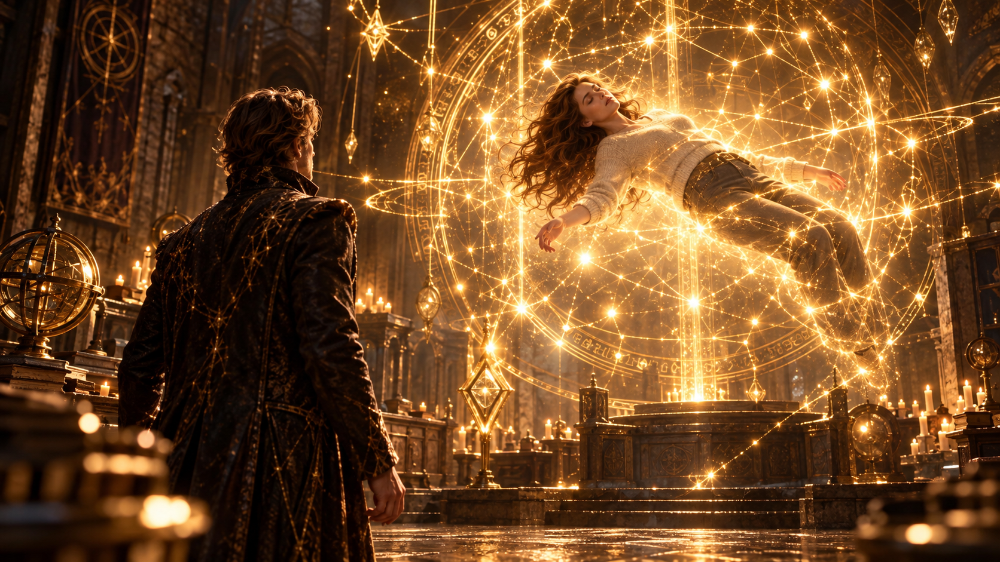
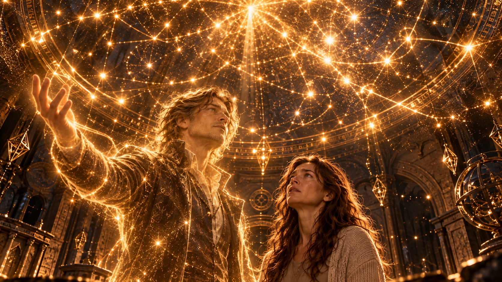
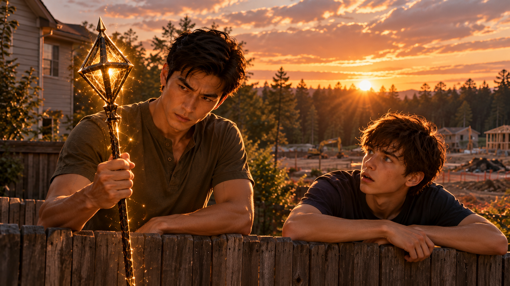

WHITE MAGIC ART STUDIO
最終章
新的旅程
美國・猶他州・鹽湖城・東湖地下教會
密室裡，一切仍然寂靜。
直到一道紫色雷光劃破黑暗，落入房間中央。
雷電並未帶來任何破壞，而是在半空中緩緩散去，凝聚成一道熟悉的身影。
詹姆斯・安德烈。
他抬起頭，望向密室中央。
無數細小的金色光點，正沿著一道巨大的結界緩緩流動。它們彼此交織，如同夜空中的星河，溫柔地環繞著沉睡的女子。
那是他的元素使天賦——星雷。
而被星雷守護著的，正是他十五年來最思念的人。
瑞秋・安德烈。
她靜靜懸浮在半空中，雙眼緊閉，彷彿只是睡了一場漫長的午覺。
詹姆斯望著她，久久沒有說話。

十五年。
對他而言，那是自己與魔神被困在身體內、幾乎失去自我的漫長歲月。
而對瑞秋而言，則是一個人將三個孩子撫養長大的十五年。
他曾經無數次想像，倘若還有機會見到她，自己究竟該說些什麼。
道歉？
感謝？
還是告訴她，自己有多麼想念她？
然而真正站在這裡時，他卻只是笑了。
「為什麼過了十五年……」
詹姆斯輕聲開口。
「妳始終還是這麼美麗？」
他緩緩舉起右手。
彷彿聽見了久違的呼喚，環繞在瑞秋身旁的星雷開始流動。金黃色的光點沿著結界向上升起，一層層交織的光芒逐漸鬆開。
這道已經守護她整整一週的聖術，終於迎來了結束的時刻。
就在這時——
瑞秋的手指輕輕動了一下。
緊接著，她猛然睜開雙眼。
「……！」
她深吸一口氣，像是剛從一場無比真實的夢境中驚醒。
隨著星雷結界逐漸消散，她的身體緩緩下降，雙腳終於重新踏上石桌。
瑞秋扶住桌緣，試著穩住身體。
「這裡是……」
她環顧四周。
熟悉的密室。
熟悉的聖術裝置。
以及那些正在緩緩消散的金色星光。
她忽然想起了什麼。
「星雷……？」
瑞秋怔怔地望著那些光點。
那是她再熟悉不過的聖術。
曾經有一個男人，總喜歡在她面前施展這片星空。
只是那個男人，早已在十五年前離開了她。
瑞秋的呼吸微微一滯。
她緩緩轉過頭。
不遠處，一名男子正靜靜站在那裡。
熟悉的輪廓。
熟悉的眼神。
還有那抹她曾經以為，再也沒有機會看見的笑容。
「……詹姆斯？」
她的聲音幾乎聽不見。
男子微微一笑。
「是我。」
他望著她。
「瑞秋。」
瑞秋沒有立刻走向他。
她只是站在原地，怔怔地望著那張臉。
十五年來，她曾經無數次在夢裡見到他。
有時候，他仍然是離家前的模樣。
有時候，他只是站在遠方，無論她怎麼呼喚，都不肯回頭。
她早已習慣在夢醒之後，面對身旁空蕩蕩的位置。
所以這一次，她甚至不敢確定，自己是不是真的醒了。
「真的是你……？」
詹姆斯輕輕點頭。
「是我。」
瑞秋向前走了一步。
又一步。
她緩緩伸出手，想要觸碰丈夫的臉。
然而，當指尖碰上他的臉頰時，卻沒有傳來熟悉的溫度。
她的手，輕輕穿過了那道身影。
幾顆金色的光點隨之散開，又重新聚攏。
瑞秋怔住了。
她低頭望著自己的手。
「你……」
她的聲音微微沙啞。
「這到底是怎麼回事？」
詹姆斯望著她，眼底浮現一絲歉意。
「我知道妳一定有很多問題。」
他停頓片刻。
「但我恐怕沒有太多時間回答了。」
瑞秋抬起頭。
「什麼意思？」
詹姆斯沒有立刻回答。
他只是望向那些逐漸消散的星雷。
「十五年前，我確實已經死了。」
他的聲音很輕。
「現在的我，只是暫時留在這個世界的靈體。」
瑞秋的神情僵住了。
詹姆斯重新望向她。
「我來這裡，是為了親自解除妳身上的星雷。」
他微微一笑。
「也為了把那些沒能親口告訴妳的話，說完。」
瑞秋沉默了。
她望著眼前的丈夫，眼眶漸漸泛紅。
過了許久，她才低聲問：
「那孩子們呢？」
詹姆斯的笑容變得柔和。
「他們成功了。」
瑞秋猛然抬頭。
「什麼？」
「十五年前被我封印的魔神，已經被壓制了。」
詹姆斯望著她。
「而且，比我原本預期的還要早。」
他停頓了一下，語氣裡多了幾分驕傲。
「柴克也終於覺醒，成為真正的雷翼聖術師。」
瑞秋的眼眶瞬間紅了。
「柴克……」
她低下頭，彷彿還需要一點時間，才能理解這個消息。
那個曾經因為不去看他比賽而生氣的孩子，
竟然已經成為雷翼。
「那……克里斯和安娜呢？」
她連忙抬起頭。
「他們還好嗎？」
「他們都很好。」
詹姆斯輕輕回答。
「瑞秋，不是只有柴克。」
他的眼神裡滿是欣慰。
「是我們三個孩子，一起完成了這件事。」
瑞秋望著他。
「克里斯、柴克，還有安娜。」
詹姆斯笑著點頭。
「他們每一個人，都比我想像中還要勇敢。」
瑞秋終於長長地鬆了一口氣。
她閉上眼睛，彷彿直到這一刻，心中某塊緊繃的地方才終於放下。
然而，當她再次睜開眼睛時，神情卻變了。
「等等。」
詹姆斯微微一怔。
「嗯？」
瑞秋望向四周。
那些尚未完全散去的星雷，仍在密室裡緩緩流動。
她忽然意識到了什麼。
「詹姆斯。」
她的語氣沉了下來。
「你讓我睡了多久？」
詹姆斯的笑容頓時有些僵硬。
「呃……」
他遲疑了一下。
「傑西說，已經有一陣子了。」
瑞秋沒有說話。
「瑞秋，我……」
「你知道嗎？」
她打斷了他。
「我連自己的孩子正在經歷什麼，都不知道。」
詹姆斯沉默了。
瑞秋深吸一口氣。
「你總是這樣。」
她望著丈夫。
「十五年前也是。」
「你決定去執行那個任務，決定把魔神封印在自己體內，甚至連遺書都事先準備好了。」
她的聲音逐漸顫抖。
「你把所有事情都安排好了。」
「卻沒有給我們任何選擇的機會。」
詹姆斯低下頭。
「對不起……」
「現在也是。」
瑞秋的眼眶泛紅。
「你怕我受傷，怕我受到牽連，所以又一次替我做了決定。」
她停頓片刻。
「可是詹姆斯……」
她望著他。
「我是你的妻子。」
這句話讓詹姆斯緩緩抬起頭。
瑞秋的聲音很輕，卻沒有絲毫猶豫。
「我知道你想保護我們。」
「我也從來沒有懷疑過，你愛這個家。」
她深吸一口氣。
「但我不希望自己永遠都是那個，等到一切結束以後，才知道發生了什麼事的人。」
密室裡安靜了下來。
詹姆斯望著她，久久沒有回答。
他忽然明白，自己一直以為的守護，或許也讓瑞秋承受了另一種孤獨。
那是他十五年前沒有機會聽見，也沒有機會理解的心聲。
「妳說得對。」
詹姆斯終於開口。
「我總以為，只要能讓妳和孩子們平安，其他事情由我一個人承擔就好。」
他苦笑了一下。
「結果到最後，反而是妳替我承擔了最多。」
瑞秋望著他，沒有否認。
過了片刻，她輕輕嘆了一口氣。
「可是……」
詹姆斯抬起頭。
「當初決定嫁給你的時候，我就知道，我們不可能擁有完全平靜的人生。」
她微微一笑。
「不只是因為我愛你。」
「而是因為我們都知道，自己對這個世界有責任。」
她望著那些尚未散去的星光。
「也因為我們都相信，那位創造這個世界並且愛我們的拉比。」
詹姆斯怔怔地望著她。
十五年前，他愛上的就是這樣的瑞秋。
她從來不會因為愛他，就放棄自己的想法。
也從來不會因為害怕失去，就否定他們共同相信的事。
過了許久，詹姆斯才緩緩笑了。
「瑞秋……」
他的眼眶微微泛紅。
「為什麼過了十五年……」
他輕聲問。
「我還是這麼愛妳？」
瑞秋先是一怔。
隨即忍不住笑了。
「你現在才知道？」
詹姆斯也笑了。
兩人靜靜望著彼此。
隔著十五年的歲月，也隔著一道再也無法真正跨越的距離。
但至少在這一刻，他們終於有機會，把那些曾經來不及說出口的話，親口告訴對方。
然而，詹姆斯知道，自己不能一直停留在這一刻。
他的時間所剩無幾。
「瑞秋。」
「嗯？」
「在我離開以前，還有一件事，我必須告訴妳。」
瑞秋察覺到丈夫神情中的凝重。
她收起笑容。
「什麼事？」
詹姆斯沉默片刻。
「關於柴克。」
瑞秋微微皺眉。
「柴克？」
「在他出生以前，我曾經聽過一個非常古老的預言。」
「預言？」
瑞秋的神情瞬間變了。
「詹姆斯，你忘了嗎？你們家就是因為那些所謂的預言，才會變成那個樣子。」
她停頓了一下。
「尤其是你父親……」
「我知道。」
詹姆斯輕聲回答。
「當年，爺爺把雷翼預言視為整個安德烈家族必須完成的使命。他把所有期待都壓在我父親身上，卻從來沒有想過，父親是否承受得住。」
詹姆斯垂下目光。
「後來父親離開了家族，也遇見了我的母親。只是，他們終究沒能逃離安德烈家的掌控。」
瑞秋靜靜望著他。
「我知道父親當年有很多不得已的地方。」
詹姆斯停頓片刻。
「我也從來沒有恨過他。」
他的聲音漸漸低沉。
「只是我很清楚，一個家族若把預言看得比眼前的人更重要，最後會讓多少人受到傷害。」
他重新抬起頭。
「所以，當柴克出生的那晚，金色亞斯蘭之星真的出現時……」
詹姆斯苦笑。
「我才發現，自己可能必須面對和父親當年一樣的問題。」
瑞秋望著他。
片刻後，她似乎明白了。
「因為這個預言，跟柴克有關？」
詹姆斯緩緩點頭。
「妳還記得嗎？當年我父親一直被迫背負著一個預言——雷翼將誕生於安德烈家族的後嗣之中。」
他苦笑了一下。
「為了那句話，他承受了多少壓力，又被迫接受多少自己不願意的安排……」
瑞秋沒有回答。
那些往事，她並非不清楚。
「我曾經以為，只要離開那個家，就能把一切拋在身後。」
詹姆斯抬起頭。
「可是，柴克出生了。」
他的聲音逐漸低沉。
「而那個曾經折磨我們家族的預言，竟然真的應驗了。」
瑞秋望著丈夫。
「所以，你開始相信其他預言也會成真？」
「不是全部。」
詹姆斯搖頭。
「但有一個，我始終無法忽視。」
他停頓片刻。
「尤其當我發現，它可能與我們所處的時代有關。」
密室裡的星光緩緩流動。
詹姆斯深吸一口氣。
「那個預言提到，在審判日來臨以前，一位誕生於亞斯蘭之星照耀下的聖術師，將受到撒旦碎片的引誘。」
瑞秋的眉頭逐漸緊鎖。
詹姆斯繼續說：
「而那個人，最終可能墮落，成為魔皇。」
「……魔皇？」
瑞秋怔住了。
「預言說，這將帶來前所未有的災厄。」
瑞秋沉默了許久。
她低下頭，似乎正在努力整理這些訊息。
「可是，詹姆斯……」
她重新望向丈夫。
「亞斯蘭之星已經出現過那麼多次。你怎麼知道，預言指的是我們這個世代？」
詹姆斯沒有立刻回答。
「因為我在古代聖典裡，發現了拉比留下的一段話。」
瑞秋安靜下來。
詹姆斯緩緩開口：
「我不知道那日與那時，唯有父知道。」
他停頓片刻。
「但在那終焉的世代，金色亞斯蘭之星，將是六顆星之中最後出現的一顆。」
瑞秋的目光微微一變。
「金色亞斯蘭之星……」
她低聲重複。
隨即抬起頭。
「雷翼？」
「沒錯。」
詹姆斯點頭。
「雷翼是拉比最早冊封的翼聖術師。」
「但按照這段記載，在最後的世代裡，象徵雷翼的金色亞斯蘭之星，卻會是六顆星之中最後出現的。」
瑞秋沉默了。
「這些年來，我一直在追蹤六顆亞斯蘭之星出現的順序。」
詹姆斯繼續說：
「歷代六翼的出現順序並不固定。有時是雷翼先出現，有時是其他元素。」
他望著瑞秋。
「但唯獨這一代……」
瑞秋似乎已經猜到了答案。
「金色亞斯蘭之星，是最後出現的？」
詹姆斯緩緩點頭。
「就是柴克出生的那個夜晚。」
瑞秋的呼吸微微一滯。
「那晚照耀著他的金色亞斯蘭之星，正是這個世代最後出現的第六顆星。」
密室陷入短暫的寂靜。
瑞秋望著丈夫。
她曾經以為，柴克出生那晚的異象，只是他們一家人必須共同守護的秘密。
如今才知道，詹姆斯竟然早已在那片金色星光背後，看見了另一種可能。
「所以……」
她輕聲問。
「你認為，我們真的活在預言所說的最後世代？」
詹姆斯沒有立即回答。
他望著那些緩緩流動的星光，過了許久才開口。
「我無法證明審判日究竟何時來臨。」
「但從目前所有的線索來看……」
他轉頭望向瑞秋。
「我相信，我們很可能正活在那個世代。」
瑞秋低下頭。
她想起柴克。
那個從小喜歡射箭、熱愛籃球，總是努力想證明自己的孩子。
她實在無法將那個熟悉的身影，與預言中可怕的魔皇聯想在一起。
「可是……」
她抬起頭。
「你不會認為，柴克就是那個人吧？」
「不。」
詹姆斯幾乎沒有猶豫。
他的語氣異常堅定。
「我從來沒有這麼認為。」
瑞秋怔了一下。
「而且，今天發生的一切，更讓我確信這件事。」
詹姆斯微微一笑。
「我們的兒子，在擁有足以改變戰局的力量時，選擇了守護，而不是毀滅。」
他停頓片刻。
「我相信柴克。」
瑞秋望著他，緊繃的神情終於稍稍放鬆。
然而，詹姆斯接下來的話，卻讓她再次沉默。
「只是，如果預言是真的……」
他望向密室深處。
「那麼六翼之中，終究可能有人受到撒旦碎片的誘惑。」
「而我們現在，還不知道那個人是誰。」
瑞秋久久沒有說話。
直到某個念頭忽然浮現。
「所以……」
她望向丈夫。
「十五年前，你在遺書裡提到，如果自己出了什麼事，希望柴克不要太早接觸聖術世界……」
詹姆斯抬起頭。
瑞秋的聲音微微顫抖。
「也是因為這個預言？」
詹姆斯緩緩點頭。
「是。」
他輕聲說：
「遺書裡寫下的其他原因都是真的。」
「但這件事，才是我心裡最深的擔憂。」
瑞秋低下頭。
「所以你才希望他像普通孩子一樣長大？」
「嗯。」
詹姆斯望著她。
「我希望他能先學會愛人。」
「學會信任。」
「學會珍惜那些看似理所當然，卻可能隨時失去的日常。」
瑞秋安靜地聽著。
「因為我不希望他從小就相信，自己的價值只取決於能否成為雷翼。」
詹姆斯苦笑了一下。
「我太清楚那種感覺了。」
他望著自己的雙手。
「當一個孩子被告知，自己生來就必須完成某種使命，他很容易忘記，在成為什麼人以前，他首先是一個人。」
瑞秋的目光漸漸柔和下來。
「所以……你希望柴克先保有一顆平凡的心。」
詹姆斯點頭。
「只有真正理解自己想保護的是什麼，他才不會在得到力量以後，迷失自己。」
他抬起頭，溫柔地望著瑞秋。
「而我會這麼想……」
他微微一笑。
「其實都是因為妳。」
瑞秋怔住了。
「我？」
「是啊。」
詹姆斯輕輕點頭。
「瑞秋，妳還記得我們剛認識的時候嗎？」
她沒有回答，只是靜靜望著他。
「那時候的我，雖然早已離開安德烈家，卻始終不知道，該如何看待自己的過去。」
他低頭望著掌心。
「我不恨父親.我知道他也曾經努力想逃離那個地方。」
「可是，家族曾經對我們做過的事，還是讓我很難相信，自己真的能擁有一段不被預言左右的人生。」
他沉默片刻。
「我甚至曾經以為，擁有強大的聖術，就代表必須承擔別人替我決定好的責任。」
瑞秋安靜地聽著。
「直到遇見妳。」
詹姆斯緩緩張開右手。
一顆溫暖的金色光點，在他的掌心悄然亮起。
接著是第二顆、第三顆。
細小的金色雷光沿著他的指尖流動，逐漸交織成一片璀璨的星空。
「妳讓我知道，聖術不是為了滿足一個家族的期待。」
他抬頭望向那些星辰。
「而是為了守護自己真正珍惜的人。」
詹姆斯望向瑞秋，露出溫柔的笑容。
「也是從那時候開始，我的元素使天賦，才真正有了形狀。」
瑞秋緩緩抬起頭。
那些光點沿著牆面流動，最後在天花板上交織成一片璀璨的星空。

她的眼眶漸漸濕潤。
「這是……」
詹姆斯望著她。
「像我這樣的元素使，能夠將心中所盼望的事物，化為真實存在的力量。」
他停頓片刻。
「但以前的我，總是想著如何變得更強。」
「如何不辜負別人的期待。」
「如何證明自己有資格擁有這份天賦。」
他望向四周。
「直到有一天，妳告訴我一件事。」
瑞秋怔怔地望著那些星光。
詹姆斯輕聲說：
「妳說，拉比曾經告訴過妳，在看似永無止境的黑暗中……」
瑞秋緩緩接上他的話。
「……才能看見星星最美麗的樣子。」
她抬起頭。
金黃色的光芒映照在她的眼中。
「而每一顆星星，都代表著祂與我同在的證據。」
詹姆斯微笑著點頭。
「沒錯。」
他望著眼前的妻子。
「那時候，我第一次明白……」
「黑暗並不代表神已經離開。」
他緩緩張開手掌。
無數細小的星雷沿著他的指尖流動，彷彿回應著那段久遠的記憶。
「我一直以為，自己的力量必須像雷霆一樣，強大得足以擊退所有敵人。」
「但妳讓我知道，有時候，人們真正需要的，不是另一道足以摧毀黑暗的雷電。」
詹姆斯望向瑞秋。
「而是一點能夠陪伴他們走過黑暗的光。」
瑞秋的眼淚終於滑落。
詹姆斯輕聲說：
「也是從那時候開始，我的元素使天賦，才真正有了形狀。」
他抬頭望向滿室星光。
「星雷。」
瑞秋緩緩低下頭。
她曾經看過詹姆斯無數次施展這項聖術。
卻直到此刻，才真正明白其中的意義。
「所以……」
她輕聲問。
「『星雷』的出現，是因為我？」
詹姆斯笑了。
「是妳讓我先遇見了拉比。」
「也是妳讓我知道，自己的聖術究竟應該為誰而存在。」
他望著瑞秋，眼神裡滿是感謝。
「讓我由衷期盼能打造一個，『希望』如『眾星』的世界。」
瑞秋的眼眶再次泛紅。
詹姆斯繼續說：
「而我們的兒子，也是因為有妳，才有機會成為真正的雷翼。」
瑞秋怔怔地望著他。
「妳教會柴克射箭，陪他成長，在他失敗的時候鼓勵他，也在他做錯事情的時候責備他。」
詹姆斯輕輕笑了。
「那些看起來再普通不過的日子，卻是我無論擁有多強大的聖術，都無法替他創造的。」
他的聲音逐漸變得柔和。
「瑞秋，謝謝妳。」
「謝謝妳讓我們的孩子，先學會怎麼成為一個人。」
「然後，才成為聖術師。」
瑞秋低下頭。
過了許久，她才輕聲開口。
「你現在才告訴我這些……」
詹姆斯的笑容微微收斂。
「我知道。」
他低下頭。
「我應該更早告訴妳。」
瑞秋擦去眼角的淚水。
「你真的欠我很多解釋。」
詹姆斯苦笑。
「我知道。」
「而且還不只這些。」
「……這我也知道。」
瑞秋忍不住笑了。
詹姆斯也跟著笑了起來。
密室裡，那片金黃色的星空仍然靜靜閃耀。
過了片刻，詹姆斯忽然望向四周。
「有時候，我真的希望自己只是個普通人。」
瑞秋抬起頭。
「嗯？」
「沒有什麼守護世界的能力。」
「也不需要面對那些可怕的預言。」
詹姆斯望著妻子。
「每天早上醒來，跟妳一起吃早餐。」
「偶爾為了一些無聊的小事吵架。」
「然後看著孩子們慢慢長大。」
他停頓片刻。
「只要能和妳過一段那樣的日子……」
詹姆斯輕輕笑了。
「哪怕只有十年，也好。」
瑞秋望著他。
眼淚再次滑落。
但這一次，她沒有急著擦去。
「也許……」
她輕聲說。
「拉比選擇我們，正是因為我們知道，那些平凡的日子有多麼珍貴。」
詹姆斯怔了一下。
隨即露出笑容。
「也許吧。」
他聳了聳肩。
「不過，等我待會見到祂，我可能還是會先抱怨幾句。」
瑞秋忍不住笑出聲。
「你敢？」
「我會試試看。」
詹姆斯一本正經地回答。
「反正這次，應該沒有什麼任務能再派給我了吧？」
瑞秋笑著搖了搖頭。
「你真的一點都沒變。」
詹姆斯望著她。
「是嗎？」
「嗯。」
瑞秋微微一笑。
「還是那個讓人又愛又恨的詹姆斯。」
兩人再次笑了起來。
然而，就在這時——
詹姆斯的身影忽然微微閃爍。
金黃色的光點從他的腳邊緩緩升起。
瑞秋的笑容漸漸收斂。
「……詹姆斯？」
詹姆斯低頭看了看自己的雙手。
原本清晰的輪廓，正在一點一點變得透明。
他沉默片刻。
隨後，抬起頭。
「看來……」
他輕輕笑了。
「我真的該走了。」
瑞秋望著他。
這一次，她沒有再伸手試圖抓住那道身影。
因為她知道，自己已經無法留住他。
詹姆斯緩緩向前。
瑞秋也向他走近。
兩人站在彼此面前。
近得彷彿只要再往前一步，就能重新擁抱。
然而，他們之間始終隔著一道無法跨越的距離。
詹姆斯微微低下頭。
瑞秋也輕輕閉上眼睛。
兩人的額頭幾乎相觸。
雖然沒有真正的溫度，瑞秋卻彷彿又回到了那些平凡的日子。
那些他出門前總會向她道別的早晨。
那些一家人圍坐在餐桌旁的夜晚。
以及那個，她曾經以為永遠不會再回來的人。
「瑞秋。」
詹姆斯輕聲說。
「我愛妳。」
他的聲音微微顫抖。
「謝謝妳……一直站在我身邊。」
瑞秋的眼淚緩緩滑落。
「我也是。」
她輕聲回答。
「詹姆斯……」
她睜開眼睛，望著那張逐漸透明的臉。
「我也是。」
詹姆斯露出最後一抹溫柔的笑容。
下一瞬間，金黃色的光芒從他的身上緩緩綻放。
那些曾經構成星雷的光點，開始一顆接著一顆升起。
他的雙手。
他的肩膀。
最後，是那張瑞秋再熟悉不過的臉。
沒有轟鳴的雷聲。
也沒有耀眼得令人無法直視的光芒。
只有無數細小的金色星辰，在密室裡靜靜飄散。
瑞秋站在原地，望著那些光點緩緩升向天花板。
直到最後一顆星光，也消失在黑暗之中。
密室重新恢復寂靜。
瑞秋久久沒有移動。
過了許久，她才緩緩抬起頭。
望向剛才那片星空曾經存在的位置。
「謝謝你……」
她輕聲說。
「詹姆斯。」
她深吸一口氣，擦去眼角的淚水。
十五年前，她失去了丈夫。
十五年後，她終於有機會親口向他道別。
然而，這一次的告別，並不代表她的人生就此停下。
瑞秋轉身，望向密室出口。
她知道，自己還有一件非常重要的事，必須完成。
於是，她邁開腳步。
走向門外。
＊
四個月後
美國・猶他州・鹽湖城・安德烈家
一輛搬家貨車停在安德烈家門前。
幾名來自東湖教會的弟兄姊妹正忙著搬運家具，客廳裡堆滿尚未拆封的紙箱。廚房不時傳來餐具碰撞的聲響，偶爾還能聽見克里斯與安娜為了家具該擺在哪裡而爭論。
陽光穿過嶄新的窗戶，落在剛鋪好的木質地板上。
這棟曾在惡魔襲擊中幾乎毀壞的房子，終於恢復了往日的模樣。
不，或許還是有些不同。
牆面重新粉刷過，破損的家具換成了新的，連屋內原本那些細微的歲月痕跡，也隨著整修消失了不少。
但對安德烈一家而言，這裡依然是家。
修繕費用由傑西主動承擔。
在他看來，既然這場災難與約爾森家族長年累積的問題有著無法切割的關係，他便不能只因戰鬥結束，就將一切視為過去。
至於鮑伯・約爾森，在魔神遭到壓制、黑霧消散之後，也擺脫了黑霧的轄制。
然而，自由並不代表過往的罪責就此消失。
傑西親自將他交由美國聖術會拘禁，接受後續調查與處置。
這個決定並不容易。
鮑伯終究是他的家人。
但傑西明白，真正的寬恕從來不等於逃避責任。
在寫給鮑伯的一封信裡，他留下了這樣一句話：
「我真心盼望，有一天，你能重新以家人的身分，回到我們身邊。」
那不是一句保證。
而是一份尚未放棄的盼望。
從那天起，傑西也開始著手面對約爾森家族長年以來的偏見與錯誤。
他知道，改變一個家族遠比修復一棟房子困難。
但至少，這一次，他不打算再視而不見。
而對安德烈一家來說，今天同樣象徵著一個新的開始。
他們終於可以回家了。
家裡甚至還多了一位成員。
只是……
也有一個人，始終沒有回來。
「叔叔！」
克里斯抱著紙箱走進房間。
「這個放這裡可以嗎？」
雷正站在一堆尚未整理的物品之間，研究著該如何騰出空間。
他回過頭，打量了一眼。
「嗯，放那邊就好。謝啦！」
克里斯將紙箱放下，拍了拍手上的灰塵。
雷環顧四周，忽然想起什麼。
「對了，柴克呢？」
「後院啊。」
克里斯回答得理所當然。
見雷微微一怔，他又笑著補上一句：
「你又不是不知道，他從小就喜歡一個人待在那裡。」
雷聞言，也跟著笑了。
「也是。」
他放下手中的東西，穿過熱鬧的客廳，推開通往後院的門。
門外的世界，卻安靜得像是另一個地方。
柴克正靠在圍欄旁。
沒有弓箭，也沒有練習用的箭靶。
剪了一頭俐落短髮的他只是靜靜望著遠方。
雷走到他身邊，順著他的目光看去。
曾經茂密的小森林，如今只剩下一小片樹林。
大型機具正在遠處整平土地。熟悉的樹木與小徑逐漸消失，取而代之的是施工圍籬，以及一棟棟正在興建的建築。
空氣中混雜著泥土與柏油的氣味。
雷看了許久，才輕聲開口。
「新髮型很適合你。」
柴克轉過頭，笑了笑。
「謝啦。」
「這片森林以前真的很漂亮。」
「是啊。」
他再次望向遠方。
「不過，沒關係啦。」
「嗯？」
「以後想練箭的話，我可以去東湖地下教會。」
柴克聳了聳肩，語氣聽起來相當輕鬆。
雷點點頭。
兩人並肩站著，誰也沒有急著說話。
直到一陣風吹過，雷才再次開口。
「還是沒有你媽媽的消息嗎？」
柴克臉上的笑容，慢慢淡了下來。
「……沒有。」
他低下頭，腳尖輕輕撥動地上的碎石。
「其實，我到現在還是覺得很奇怪。」
雷沒有打斷他。
「我們打敗魔神的那天，媽媽終於醒來了。」
柴克望著那片逐漸消失的森林。
「可是，她卻只留下一封信，就這樣離開了。」
雷垂下目光。
他同樣記得那封信。
瑞秋在信中提到，自己必須執行一項不能公開的秘密任務。她沒有交代目的地，也沒有留下確切的歸期。
唯一明確的請求，是希望雷搬進安德烈家，陪伴三個孩子。
「我甚至還沒來得及親口跟她說聲謝謝。」
雷輕聲說。
柴克轉頭看向叔叔。
「你早就該搬進來了，好嗎？」
「嗯？」
「這裡本來就永遠歡迎你啊。」
柴克說得自然，彷彿這根本不是一件需要討論的事。
雷怔了片刻。
隨後，他露出一抹溫柔的笑容。
「……謝謝你，柴克。」
柴克也笑了。
只是當他再次望向遠方時，那抹笑意又悄悄消失了。
「叔叔，你知道嗎？」
「嗯？」
「其實，我的射箭是媽媽教的。」
雷轉頭看著他。
柴克望向後院某個空蕩蕩的角落。
那裡曾經擺著一個箭靶。
「以前，她常常陪我在這裡練習。」
他輕輕笑了一聲。
「每次我射不中，她就會叫我重新調整呼吸，先看清楚目標，不要急著放箭。」
「可是那時候，我總覺得她很囉唆。」
雷靜靜聽著。
「有時候還會跟她頂嘴。」
柴克的笑容漸漸收斂。
「現在想想……」
他低下頭。
「我真的很後悔，之前跟她吵架。」
風輕輕吹動圍欄旁的雜草。
「我原本以為，等她醒來以後，我們終於可以好好談談。」
柴克停頓了一下。
「結果，她卻走了。」
雷望著眼前的少年。
四個月前，正是這個孩子，以雷翼之姿站在魔神面前。
如今，他卻只是個想念母親的十七歲男孩。
「我知道媽媽以前是探員，也知道有些任務不能隨便告訴別人。」
柴克抬起頭，眉頭微微皺起。
「可是……到底是什麼任務，連自己的家人都不能知道？」
雷沉默了。
他想說些什麼，卻發現自己也沒有答案。
過了片刻，他忽然開口：
「嘿，柴克。」
「嗯？」
「其實，你以前的每一場球賽，我都有去看。」
柴克猛然轉過頭。
「……真的假的？！」
雷笑著點頭。
「真的。」
「每一場？」
「只要我能到場，就會去。」
雷望向遠方，彷彿又看見那些熟悉的球場。
「那時候，我還不能讓你知道我的身分。所以只能坐在觀眾席比較遠的地方，看你打球。」
柴克愣愣地望著他。
「你是說……」
「嗯。」
雷輕輕點頭。
「我一直都在關心你。」
他停頓片刻。
「只是你不知道而已。」
柴克沒有回答。
雷轉頭看向他。
「我想，你媽媽或許也是一樣。」
柴克緩緩抬起頭。
「也許她有自己的苦衷，只是現在還不能告訴你。」
雷的聲音很平靜。
「我不敢說自己知道她為什麼離開。」
「但至少，我相信她的出發點，和我們一樣。」
柴克沉默了一會兒。
「……因為在乎？」
雷微笑著點頭。
「嗯。」
柴克重新望向遠方。
過了片刻，他輕聲說：
「安德烈家族……」
雷看向他。
柴克露出一抹淡淡的笑容。
「總是以家人為榮。」
那是雷曾經告訴過他的話。
如今，柴克終於明白了其中的重量。
就在這時，雷忽然想起什麼。
「對了。」
柴克看向他。
「查德最近怎麼樣？」
柴克愣了一下。
隨即笑了。
「好得不得了。」
雷挑起眉毛。
「真的？」
「真的啦！」
柴克忍不住笑出聲。
「只是他偶爾還是會跟我說，自己做了一個超荒唐的噩夢。」
雷笑了。
「什麼噩夢？」
「他也說不清楚。」
柴克聳了聳肩。
「反正他現在一直說，這輩子再也不看恐怖片了。」
雷忍不住大笑。
「看來你以後還會遇到更多『修正法則』帶來的麻煩事。」
柴克也跟著笑了。
笑聲在後院裡迴盪。
過了片刻，柴克才重新開口。
「所以……」
他望向遠方。
「我的人生接下來，真的會變得完全不一樣，對吧？」
雷看向他。
「是啊。」
他輕輕點頭。
「你以雷翼之姿壓制魔神的事情，現在可以說是震驚了整個聖術界。」
柴克微微一怔。
雷繼續說：
「而且，你現在可是這個世代第一位正式曝光的翼聖術師。」
柴克苦笑了一下。
「聽起來就超級麻煩。」
雷笑了。
「那你呢？」
柴克轉頭。
「我？」
「嗯。」
雷望著他。
「現在有什麼打算？」
他停頓片刻。
「關於成為雷翼這件事。」
柴克的笑容逐漸收斂。
他低頭看向自己的雙手。
過了片刻，才緩緩開口。
「我想……」
他抬起頭。
「我應該去找出其他撒旦碎片的下落。」
雷的神情微微一變。
柴克繼續說：
「以前我根本不知道，那些碎片竟然能造成這麼大的災難。」
他望向遠方。
「如果還有其他碎片散落在世界各地……」
柴克停頓了一下。
「那就代表，還有其他地方可能發生跟鹽湖城一樣的事。」
雷靜靜聽著。
柴克繼續說：
「而且，我也想找到其他的翼。」
雷微微挑眉。
「其他五翼？」
柴克點頭。
「嗯。」
他望向天空。
「我不知道為什麼……」
柴克的聲音逐漸變得堅定。
「但自從見過拉比以後，我就一直有種感覺。」
「祂正在召集我們。」
雷望著他。
柴克轉頭看向叔叔。
「這個世界需要我們讓聖術師團結起來。」
他握緊拳頭。
「不是只有雷翼。不是只有雷之聖術師。」
「而是所有願意為這個世界努力的人。」
雷沉默片刻。
隨即露出欣慰的笑容。
「聽起來很不錯。」
柴克笑了。
雷卻突然話鋒一轉。
「不過……」
柴克看向他。
「在那之前，你應該還有很多東西要學吧？」
柴克愣了一下。
「呃……」
雷雙手抱胸。
「你應該很清楚，這次能夠戰勝魔神，是因為你爸十五年前先將牠封印，讓牠的力量大幅減弱。」
「再加上有我們這群資深聖術師幫忙，還有拉比的介入……」
柴克的表情漸漸變得尷尬。
「我知道啦！叔叔！」
他忍不住抗議。
「我知道你講話一向很直接，但也不用這麼直接吧！」
雷笑了。
「我的意思是，你需要接受訓練。」
柴克有些不好意思地摸了摸鼻子。
「……這倒是真的。」
雷抬起右手。
「說到這個。」
他望向掌心。
「有件事，我想給你看看。」
柴克微微一怔。
「什麼？」
雷緩緩開口。
「阿法。」
一道金色光芒從他的掌心亮起。
熟悉的菱形水晶逐漸浮現。
柴克望著它。
那是他已經見過無數次的術器。
然而，下一瞬間，阿法的形狀卻開始改變。
金色紋路沿著水晶表面流動。
原本懸浮在空中的菱形晶體，底部緩緩延伸出一道黑色握柄。
細緻的金色紋路逐漸覆蓋握柄表面。
最後，整件術器化為一柄修長而莊嚴的權杖。

柴克睜大眼睛。
「哇……」
他望著阿法。
「等等！」
柴克抬頭看向雷。
「你的術器以前是長這樣嗎？」
雷笑著搖頭。
「不是。」
他望著手中的權杖。
「是最近才變成這個樣子的。」
柴克怔了一下。
「為什麼？」
雷沉默片刻。
隨即看向柴克。
「因為你。」
柴克愣住。
「我？」
雷點頭。
「這次的事情，讓我重新思考了很多事。」
他低頭看向阿法。
「以前，我總以為自己必須按照某種方式，才能完成詹姆斯交給我的責任。」
「但你讓我明白……」
雷微微笑了。
「拉比的安排，不一定會跟我們原本想像的一樣。」
柴克安靜地聽著。
雷繼續說：
「當我願意重新相信祂的帶領，我的術器也跟著改變了。」
他輕輕舉起權杖。
金色雷電沿著握柄向上流動。
柴克望著它，眼中滿是好奇。
「所以……」
他抬起頭。
「這代表你得到新的力量了？」
雷笑了。
「也許吧。」
柴克皺起眉頭。
「也許？」
「因為我還沒完全弄清楚啊。」
雷理所當然地回答。
柴克忍不住笑了。
雷也笑了。
「不過……」
他將阿法輕輕轉了一圈。
「我想，我們可以一起研究看看。」
柴克的眼睛亮了起來。
「真的？」
雷點頭。
「當然。」
他露出一抹自信的笑容。
「難道你沒聽說我是個術器使專家嗎？」
柴克笑了。
「我當然知道。」
「所以呢？」
雷挑起眉毛。
「要不要讓我這個前輩教你幾招？」
柴克立刻點頭。
「當然要！」
雷接著說：
「但我很嚴格喔。」
柴克的笑容似乎微微收斂起來。
「那我們從哪裡開始？」
雷卻沒有立即回答。
他望著柴克。
過了片刻，忽然露出一個有些神祕的笑容。
「其實……」
柴克微微一怔。
「嗯？」
雷將阿法收回掌心。
「還有件事，我想先告訴你。」
柴克看著他。
「什麼事？」
雷望向遠方逐漸染上金色的天空。
「你們三兄妹……」
他停頓了一下。
「其實在這個世界上，不只有我這一位叔叔。」
柴克怔住。
「……什麼？」
雷轉頭看向他。
「我還有一個親生的雙胞胎兄弟。」
柴克睜大眼睛。
「雙胞胎？！」
雷點頭。
「嗯。」
柴克一時不知道該說什麼。
「那他在哪裡？」
雷望向遠方。
「日本。」
柴克怔住。
「日本？」
「嗯。」
雷點頭。
「他現在住在我母親的故鄉。」
柴克望著叔叔。
腦海中瞬間浮現無數疑問。
為什麼他從來沒有聽過這個人？
為什麼雷叔叔直到現在才提起？
而且……
如果他們真的是雙胞胎，那另一位叔叔又會是什麼樣的人？
夕陽逐漸西沉。
金色的光芒落在兩人身上，將他們的影子拉得很長。
曾經熟悉的森林，正在一點一點改變模樣。
但那些留在這片土地上的回憶，並沒有因此消失。
柴克低頭望著自己的雙手。
他想起迦勒。
想起拉比。
也想起父親最後留下的話。
「當你想我的時候，就抬頭看看夜空吧。」
他緩緩抬起頭。
望向逐漸變暗的天空。
然後，露出一抹笑容。
雷站在他身旁，開始說起那段從未向三兄妹提起的往事。
後院裡，兩人的談話聲隨著晚風緩緩飄散。
曾經，他以為自己的人生，只是一段關於失去與尋找的故事。
如今，他終於明白。
有些失去，會讓人學會珍惜。
有些等待，會讓人重新找到信心。
而有些看似結束的故事……
其實只是另一段旅程的開始。